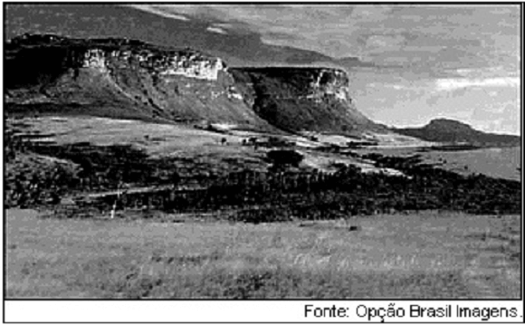
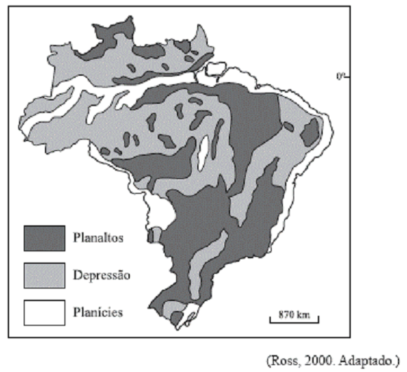
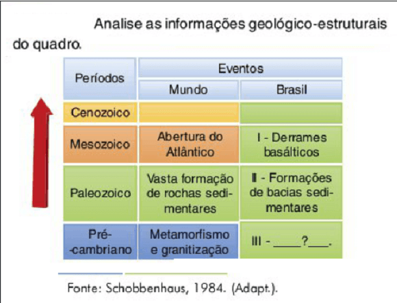

Conteúdo: Classificação geomorfológica; geomorfoclimática; geomorfoestrutural.
Objetivo: Objetivo: Identificar as classificações do relevo brasileiro, geomorfológica; geomorfoclimática; geomorfoestrutural.
Questão 01
(FADESP 2016) Entre os principais geógrafos brasileiros, três realizaram importantes estudos e pesquisas sobre a classificação do relevo brasileiro. Sobre essas classificações, é correto afirmar que:
a) o geógrafo Aroldo de Azevedo empregou termos geomorfológicos para denominar as divisões gerais (planaltos e planícies) por meio de modernas técnicas, como sensoriamento remoto e imagens de satélites.
b) Jurandyr Ross, com base nos estudos de Aroldo Azevedo, propôs uma nova divisão do relevo brasileiro, utilizando o critério de altimetria e classificando, assim, o território brasileiro em oito unidades de relevo.
c) as pesquisas dos geógrafos citados acima, sobre o relevo brasileiro, têm em comum o uso das modernas técnicas cartográficas e do sensoriamento remoto, o que garantiu a essas pesquisas um levantamento preciso do relevo brasileiro.
d) Aziz Ab’Saber, utilizando o critério morfoclimático, explicou as formas de relevo pela ação do clima e ampliou a classificação de Aroldo Azevedo, acrescentando novas unidades ao relevo brasileiro.
Questão 02
(ESA 2013) A classificação do relevo brasileiro em grandes unidades, ou compartimentos, é uma síntese dos processos de construção e modelagem da superfície terrestre e das formas resultantes. Esta classificação distingue três tipos de compartimentos, que são:
a) Planaltos, Planícies e Dobramentos Modernos.
b) Escudos Cristalinos, Bacias Sedimentares e Dobramentos Modernos.
c) Planaltos, Planícies e Depressões.
d) Plataforma Continental, Talude Continental e Fossa Abissal.
e) Chapadas, Depressões e Bacias Sedimentares.
Questão 03
(FUVEST 2011) Esta foto ilustra uma das formas do relevo brasileiro, que são as chapadas.

É correto afirmar que essa forma de relevo está
a) distribuída pelas regiões Norte e Centro-Oeste, em terrenos cristalinos, geralmente moldados pela ação do vento.
b) localizada no litoral da região Sul e decorre, em geral, da ação destrutiva da água do mar sobre rochas sedimentares.
c) concentrada no interior das regiões Sul e Sudeste e formou-se, na maior parte dos casos, a partir do intemperismo de rochas cristalinas.
d) restrita a trechos do litoral Norte-Nordeste, sendo resultante, sobretudo, da ação modeladora da chuva, em terrenos cristalinos.
e) presente nas regiões Centro-Oeste e Nordeste, tendo sua formação associada, principalmente, a processos erosivos em planaltos sedimentares.
Questão 04
(UNIFESP 2009) Observe o mapa. Assinale a alternativa que contém as formas de relevo predominantes em cada porção do território brasileiro indicada, de acordo com a classificação de Ross.

a) Faixa litorânea: depressões.
b) Amazônia Legal: planícies.
c) Fronteira com o Mercosul: planaltos.
d) Região Sul: planícies.
e) Pantanal: planaltos.
Questão 05
(UDESC 2008) Segundo Aziz Nacib Ab Saber, geógrafo, o relevo predominante no Brasil é:
a) Depressão Central.
b) Planícies e Terras Baixas.
c) Planalto Brasileiro.
d) Planície Costeira.
e) Planalto das Guianas.
Questão 06
(UEG 2006)
"Não se pode jamais confundir o que é idade e gênese das formas com idade e gênese das estruturas. Se as estruturas e litologias são predominantemente antigas, o mesmo não se pode dizer das formas de relevo, que são muito mais recentes"
(ROSS, Jurandir, 1990, p. 25).
A partir do comentário e da análise do relevo brasileiro, é CORRETO afirmar:
a) As estruturas geológicas que formam o arcabouço natural do território brasileiro pertencem ao período pré-cambriano, sendo exemplos de relevo deste período as serras da Mantiqueira e do Espinhaço.
b) A paisagem característica de mares de morros (elevações suavemente arredondadas), comum na Serra da Mantiqueira, testemunha a ausência do intemperismo no processo de formação do relevo.
c) O relevo brasileiro atual é fruto de um trabalho de modelagem realizado nos tempos recentes sobre um arcabouço geológico também recente, ambos da Era Cenozoica.
d) O caráter residual do modelado é muito marcante nos planaltos e serras de Goiás-Minas. Suas formas foram elaboradas ainda no período pré-cambriano e não sofreram grandes alterações em períodos posteriores.
Questão 07
(FUVEST 2005) Analise as informações geológico-estruturais do quadro:

O item III corresponde à gênese.
a) do Escudo Brasileiro.
b) da Depressão Periférica.
c) dos Dobramentos Terciários.
d) da Bacia do Paraná.
e) da Planície Amazônica.
Questão 08
(MUNDO EDUCAÇÃO 2022) No território brasileiro, a ausência de cadeias montanhosas explica-se:
a) pela pouca atuação dos agentes externos de transformação do relevo.
b) pela ausência de dobramentos modernos.
c) pelas intensas atuações do tectonismo.
d) pelo escasseamento dos depósitos sedimentares.
e) pela intensiva ação humana sobre as áreas naturais.
Comentário:
O território brasileiro não apresenta um grande conjunto de montanhas pelo fato de não possuir dobramentos modernos, a exemplo da Cordilheira dos Andes. Esse tipo de estrutura geológica costuma situar-se nas áreas periféricas das placas tectônicas, enquanto o espaço do Brasil situa-se em uma porção interna ou continental da placa sul-americana.
Questão 09
(FUNCAB) Na década de 1980, o professor Jurandyr Ross, com base no Projeto RADAM Brasil, realizou uma nova classificação do relevo brasileiro baseado em três pilares: morfoestrutura, morfoescultura e morfoclimática. Nessa nova classificação, o Brasil foi dividido em 28 unidades de relevo, sendo que todas se enquadram em três tipos de relevos gerais. São eles:
a) planaltos, planícies e depressões.
b) serras, montanhas e cordilheiras.
c) escudos cristalinos, planaltos e planícies.
d) crátons, depressões e bacias oceânicas.
e) bacias sedimentares, crátons e cordilheiras.
Questão 10
(FASM 2014) Levando em consideração os agentes formadores do relevo brasileiro, assinale a alternativa que contém a afirmação correta.
a) No território brasileiro, as áreas de derrames magmáticos recentes são responsáveis pela presença de grandes cadeias de montanhas.
b) O Brasil está localizado no centro de placa tectônica, o que favorece a formação de dobramentos recentes.
c) No território brasileiro, as estruturas e as formações litológicas são antigas, porém as formas do relevo são recentes.
d) O território brasileiro está localizado em área de movimentos orogenéticos recentes e amplo processo erosivo.
e) O Brasil está localizado em uma área de intenso processo erosivo e estrutura geológica recente.
Alternativa C. O Brasil apresenta uma geologia muito antiga. Porém, no que toca ao relevo propriamente dito, o território brasileiro possui formas geomorfológicas recentes, em razão dos processos de intemperismo e erosão, que são intensos no país.